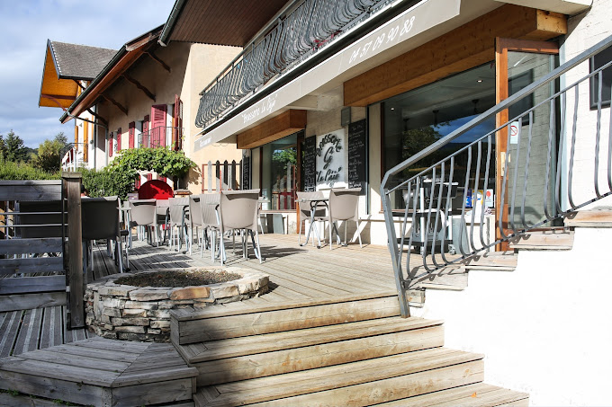

- Été 2023, Été 2021 : Travail au sein du restaurant "Le Céjo" à Metz-Tessy(74) en tant que aide-cuisine et plongeur.
- Novembre 2019 : Stage de 3ème au sein du restaurant "Le Céjo"(74) en tant qu'aide-cuisinier.
- Août 2021: Chantier de rénovation au sein de la mairie d'Annecy
- 2020-2023: Arbitre de foot au niveau régional
Les qualités que j'ai acquis durant ces expériences sont la curiosité, du fait de devoir s'intéresser au plat réalisé par le chef et de pouvoir progresser afin de devenir davantage autonome à la fin par rapport au début. J'ai également développé mon esprit d'équipe puisque je travaillais au sein d'une entreprise de 4 employés. De plus,je me devais d'être organisé afin de travailler efficacement.

Durant cette expérience professionnelle, j'ai acquis de la rigueur car j'ai participé à la rénovation d'une maison donc il fallait que cette maison soit correctement rénovée. De plus, il fallait également travailler en équipe ce qui a amélioré ma capacité à travailler en équipe.

Le fait d'avoir été arbitre m'a permis d'améliorer mon leadership du fait de devoir prendre des décisions rapides et de faire respecter les règles du jeu. De plus, j'ai également acquis une bonne gestion du stress du fait de devoir rester calme même dans les situations tendues.